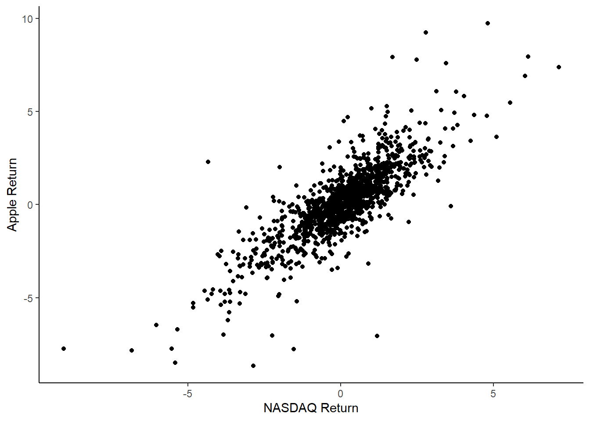

Lab 6: Stock Prices and Simple Linear Regression
Outline
Objectives
In this lab, you will analyze two stocks, Apple and Disney, to see how their daily returns compare to the market as measured by the NASDAQ. You will learn:
A practical application of simple linear regression
How to run a regression in R
How to use R and
dplyrto analyze stock data
R Packages
dplyr
ggplot2
tidyquant
tidyr
Data
Stock data: Daily stock prices for Apple, Disney, and the NASDAQ.
Grade
You will turn in a short reflection on Canvas at the end of the lab.
Step 1: Download and Format Stock Data
We will use the tidyquant package to download stock data. If you want to know more about this package, watch this video. Use the following code to download the stock prices from 2019 to 2024 for Apple (AAPL), Disney (DIS), and the NASDAQ.
The NASDAQ indicator typically refers to the NASDAQ Composite Index (symbol: ^IXIC), which tracks the performance of over 3,000 stocks listed on the NASDAQ stock exchange. This index is heavily weighted toward technology companies but also includes firms from sectors like healthcare, consumer services, and finance. Stock market indicators, such as the NASDAQ, Dow Jones Industrial Average, and S&P 500, serve as benchmarks for the overall performance of the stock market or specific sectors. These indicators provide insights into market trends, investor sentiment, and the health of the economy, helping investors make informed decisions.
library(ggplot2)
library(dplyr)
library(tidyr)
library(tidyquant)
stocks <- tq_get(c("AAPL", "DIS", "^IXIC"),
get = "stock.prices",
from = " 2019-01-01",
to = "2024-01-01")We need to use pivot_wider() from the tidyr package to reshape the data so it has a column for the date, and the stock price on each date for each stock. This function is very similar to pivot_longer(), but it changes the data so there are more columns and fewer rows. Here is the vignette about pivot_wider.
stocks <- stocks |>
select(symbol, date, open) |>
pivot_wider(names_from = symbol,
values_from = open) |>
rename(nasdaq =`^IXIC`) # rename the nasdaq to be less difficultStep 2: Calculate Return
We want to get daily stock returns (changes) rather than levels (prices), so we need to calculate them using dplyr. The formula for returns is: \[return_t = \frac{price_t-price_{t-1}}{price_{t-1}}*100 = (\frac{price_t}{price_{t-1}}-1)*100\]
To calculate this, we will use the following code:
stocks <- stocks |>
mutate(apple_return = (AAPL/lag(AAPL)-1)*100,
disney_return = (DIS/lag(DIS)-1)*100,
nasdaq_return = (nasdaq/lag(nasdaq)-1)*100)This tells R to add new variables that are calculated from the value and lagged values from other variables. You can use head(stocks) to see the returns for the first 5 observations.
Exercise
- Use the
summary()function to check out the stock returns for the two stocks and indicator. What is the average daily return? - Use the following code to find out which day had the lowest return:
stocks$date[which.min(stocks$nasdaq_return)]. Does that make sense? - Calculate the total return over the 5 years with the following code:
(tail(stocks$nasdaq, 1)/head(stocks$nasdaq, 1)-1)*100. Does this amount of growth surprise you? How does that compare to the 5 year growth of Disney and Apple?
Step 3: Plot the Data
Make a scatterplot with the NASDAQ return on the x axis and Apple return on the y axis using ggplot() and geom_point(). Label the axes using xlab() and ylab() and use theme_classic() to make the plot look like the one below.

Exercise
- What is the relationship between the NASDAQ and Apple? Is it positive or negative? Is it strong? Is it a one-to-one increase, or is the slope different from 1?
- Create the same plot for Disney.
- Compare the plots. Which one seems to have a stronger relationship with the market?
Step 4: Use a Regression to Formally Analyze
Rather than just exploring charts to determine how closely the stock follows the market, regression can provide formality and precision. In R, the function for regression is lm(), which stands for “linear model”. It generally takes the form lm(y ~ x, data = dataset_name). Run the following regression:
apple_model <- lm(apple_return ~ nasdaq_return, data = stocks)
summary(apple_model)This is an important regression in finance. It is generally written as: \[ stock return = \alpha + \beta * indicator return \]
\(\beta\) is an indicator of how volatile the stock is compared to the market. If \(\beta\) is above 1, that means the stock is more volatile or risky than the market, and if it is below 1, the stock is less volatile or risky than the market. Tech stocks tend to be high beta, because the stocks are based on potential success. Stocks like Proctor & Gamble, which makes many household goods and has been around for a long time, tend to be low beta because they are stable and low-growth.
\(\alpha\) is an indicator of how the stock performs compared to the market. If \(\alpha\) is greater than 0, then, on average, the stock grows even when the market growth is 0. If \(\alpha\) is less than 0, the stock does worse than the market. One thing you’ll hear investors say is that they are “chasing alpha”, or trying to find stocks that outperform the market.
Exercise
- What are the \(\alpha\) and \(\beta\) coefficients for Apple?
- Run the same regression for Disney instead of Apple. Compare the coefficients. Do either of them outperform the market? Which one is more volatile? Does that match what you saw in the graphs?
Step 5: Add Regression Line to Plot
To add the regression line to the plot, use the same ggplot() code from before, but add another component. After one of the plus signs in your ggplot code, add this:
stat_smooth(mapping = aes(x = nasdaq_return, y = apple_return), data = stocks,
method = "lm", geom = "smooth") +You should get a regression line with confidence intervals in gray.
Assignment
Write a few sentences describing how Disney and Apple stock compare to the overall market and to each other by interpreting their \(\alpha\) and \(\beta\) values. Turn this in on Canvas.
Further exploration
Here are some more exercises if you want more practice. 1. Download the data for Tesla for the first 5 years it was public (it went public on June 29, 2010). Compare the \(\alpha\) and \(\beta\) to the recent data. 2. Explore a different stock of your choice, for example Petco (WOOF), Coca-Cola (KO), or Harley-Davidson (HOG). 3. Try creating a line graph of a stock over time using ggplot() and geom_line().
More Finance with R
If you want a longer introduction of how to do financial analysis with R, you can check out this site or this e-book.